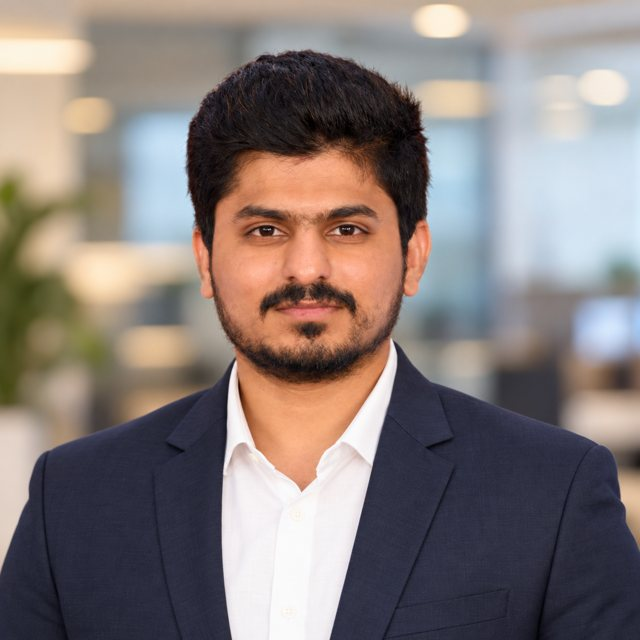

Hi, I’m Govardhan Reddy.
I build reliable multi-cloud platforms.
4+ years running production on AWS, Azure and GCP with Terraform, Kubernetes, CI/CD and observability. Based in Hyderabad, India.
About

I’m a Cloud and DevOps Engineer who started in SLA-driven production support and grew into infrastructure automation. That background means I care about what happens after deployment: clean alerts, fast root-cause analysis and fixes that stop incidents from coming back.
Day to day I work across AWS, Azure and GCP, managing infrastructure as code with Terraform Cloud and Enterprise, running Kubernetes workloads with Helm, and keeping CI/CD pipelines secure and repeatable.
Skills
Cloud platforms
Infrastructure as Code
Containers
CI/CD
DevSecOps
Observability
Networking
Scripting & systems
Experience
Cloud DevOps Engineer · Mphasis
- Operate production infrastructure across AWS, Azure and GCP: compute, storage, networking, IAM, monitoring and security.
- Manage Terraform workflows with Terraform Cloud and Enterprise, including modules, workspaces, state, plans, applies and drift checks.
- Administer AKS and EKS clusters and ship repeatable releases with Helm charts, rollouts and rollbacks.
- Support CI/CD on Azure DevOps, Jenkins and GitHub Actions, with security scanning built into pipelines.
- Automate operational checks and reporting with Python, Bash and SQL; keep SOPs, RCAs and audit-ready evidence current.
Cloud Engineer · Cognizant Technology Solutions
- Delivered SLA-driven production support: alert triage, incident handling, escalations and compliance activities.
- Monitored services with CloudWatch, Azure Monitor, Prometheus and Grafana to catch degradation early.
- Ran root-cause analysis on application, network, access and deployment failures, and documented fixes to cut repeat incidents.
- Worked with L1–L3, security, database and global support teams on high-priority escalations.
Projects
Multi-Cloud IaC with Terraform
Reusable modules for AWS, Azure and GCP networks, compute, storage, databases and IAM, run through Terraform Cloud/Enterprise with remote state, variable sets, a private registry and policy as code.
Kubernetes Administration
Workloads on AKS, EKS, GKE and on-prem with Helm charts for environment-based releases, plus troubleshooting of CrashLoopBackOff, ImagePullBackOff, DNS and ingress issues.
CI/CD Automation
Pipelines covering build, test, security scan, artifact, Terraform plan, approval, deploy and rollback on Azure DevOps and Jenkins.
Monitoring & Observability
Dashboards and alert rules for CPU, memory, pod restarts, node health, availability and errors, supporting SLA monitoring and recurring-alert analysis.
DevSecOps & Cloud Security
SAST, DAST, dependency, container, secret and IaC scanning in pipelines, catching open ports, public access, weak IAM, exposed secrets and missing encryption.
Certifications & awards
Amazon Web Services
Microsoft
Awarded by client for outstanding support delivery
For reducing the incident count to zero
Education: Bachelor of Science (2020), Sam Higginbottom University of Technology and Sciences, Prayagraj.
Contact
Open to Cloud, DevOps and Platform Engineering roles. The best way to reach me is email or LinkedIn.